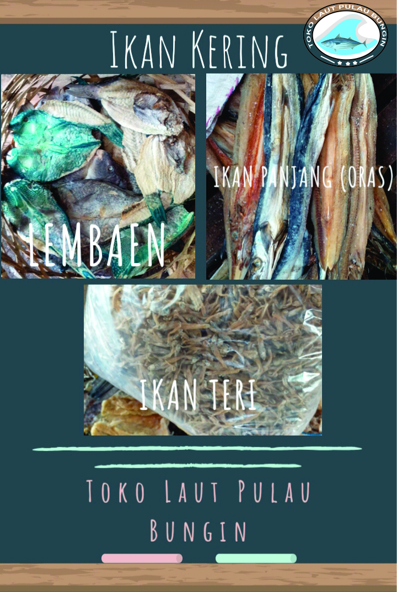
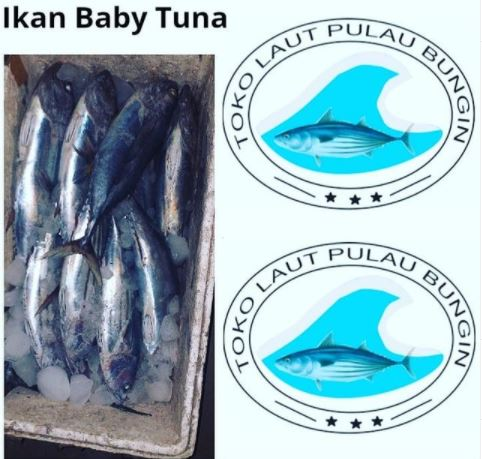
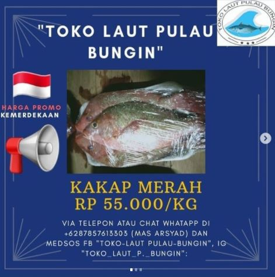
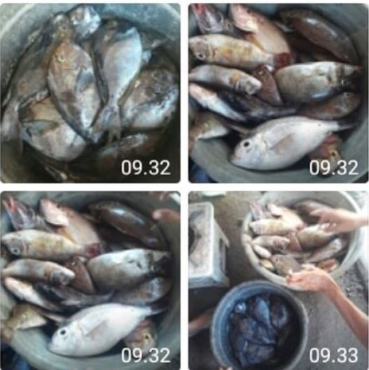
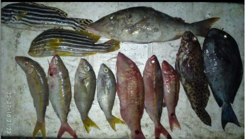

PRODUCTS
Why you choose the product?
Experienced Costumers
We provide quality Bungin Island marine fish products because their freshness is guaranteed, and why should you choose our products because they are cheap and fresh, which are directly taken from Bungin Island fishermen, whether dry, wet or such as grouper, snapper and others. besides that our products also like crabs, squid, shrimp and so on.

SERVICES
We provide the better products



